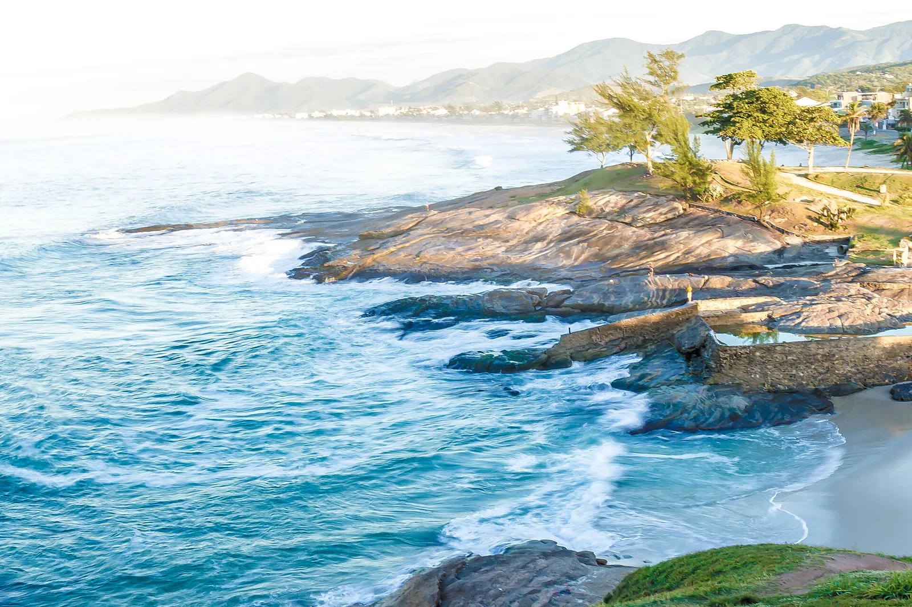

Saquarema
Brésil · surf

Le « Maracanã du surf » brésilien : un beach break puissant qui accueille une étape du championnat du monde.
- Lieu
- Brésil
- Niveau
- Intermédiaire
- Activités
- surf
- Type d'eau
- Mer / océan
- Coordonnées
- -22.92, -42.50 (position approximative du secteur)
Dangers à connaître
- Beach break puissant.
- Courants.
Le conseil d'Ocean Buddy
Vague de compétition ; bonne condition physique recommandée.
Ouvrir dans Ocean Buddy Télécharger sur l'App Store
Source : Description historique Ocean Buddy · vérification externe en attente.